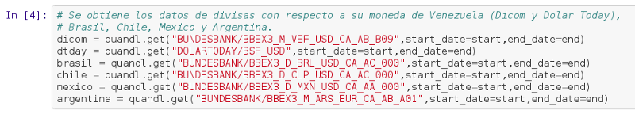
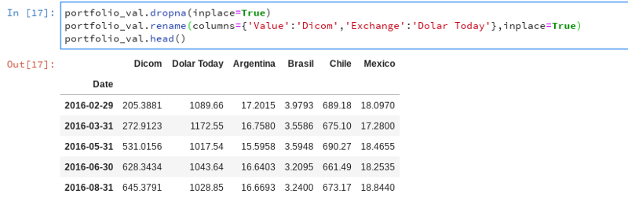

Como obtener datos Financieros de Quandl con Python y Pandas
Posted on Fri 25 May 2018 in Tutorial Python • 2 min read
La idea de este artículo es explicar de manera básica el uso de Pandas para obtener datos financieros, en este caso el valor de las divisas de Países como Argentina, Brasil, Chile, Mexico y Venezuela. Quandl es una plataforma financiera y económica de datos alternativos que sirve para inversores profesionales. El API de Quandl permite el acceso a sus datos por medio de Lenguaje R, Python, Matlab, Maple y Stata. Más información en wikipedia y en su página.
Para este caso se accederá a los datos vía Python y se visualizará por medio de Pandas y matplotlib.
La información de Quandl para los países:
- Venezuela : Dicom y Dolar Today
- Argentina
- Brasil
- Chile
- México
El proceso sería el siguiente:
- Importar librerías
- Acceso a los datos de los países en Quandl
- Ordenar las columnas, eliminar NaN.
- Crear portafolio
- Visualizar los datos
Los códigos para acceder a los datos los pueden ver por ejemplo para México en la siguiente imagen.
Página de Quandl de la información del Dolar para México
- Se importan las librerías pandas, quandl y matplotlib

- Se definen las fechas de inicio y fin del analísis

- Obtener datos de quandl

- Se visualizan los datos de Dicom y Dolar today

- Se crea el portafolio donde se agrupa todas las cotizaciones

- Se descartan los campos NaN y se renombran las columnas

- Se gráfican todas las cotizaciones

- Gráfica de Argentina
- Gráfica de Brasil

- Gráfia de Chile

- Gráfica de México

- Gŕafica de Venezuela

- Gráfica Dicom y Dolar Today por separado


El notebook lo pueden ver completo en:
ecrespo/articulos-cienciadedatos
Contribute to articulos-cienciadedatos development by creating an account on GitHub.github.com
¡Haz tu donativo! Si te gustó el artículo puedes realizar un donativo con Bitcoin (BTC) usando la billetera digital de tu preferencia a la siguiente dirección: 17MtNybhdkA9GV3UNS6BTwPcuhjXoPrSzV
O Escaneando el código QR desde la billetera: